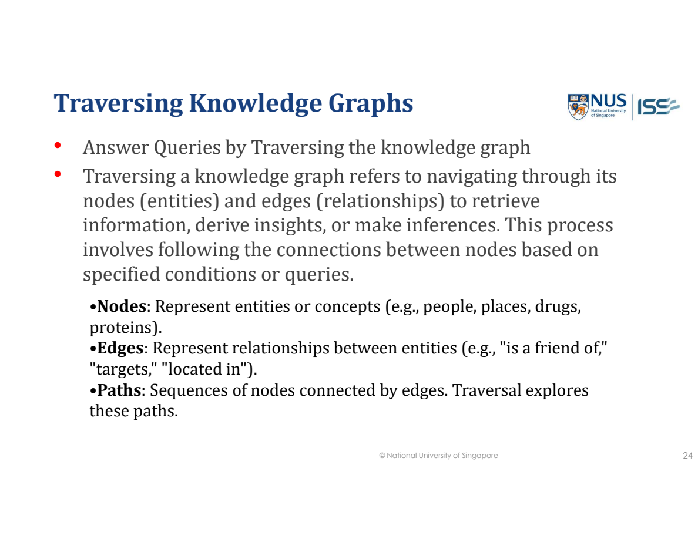
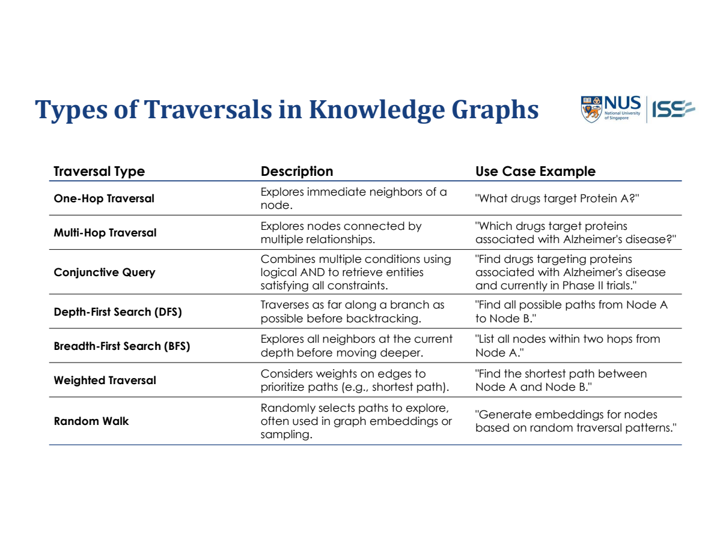
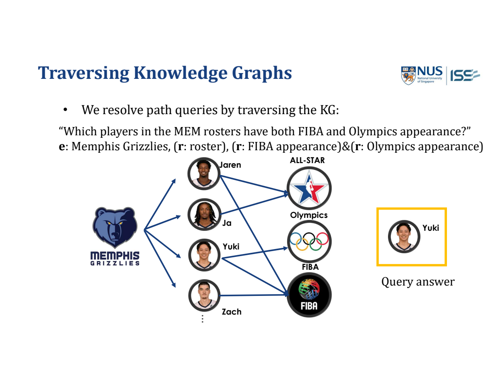
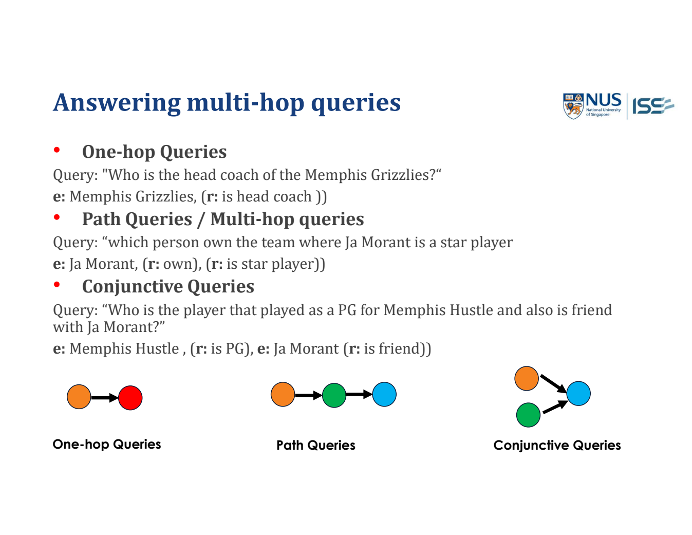
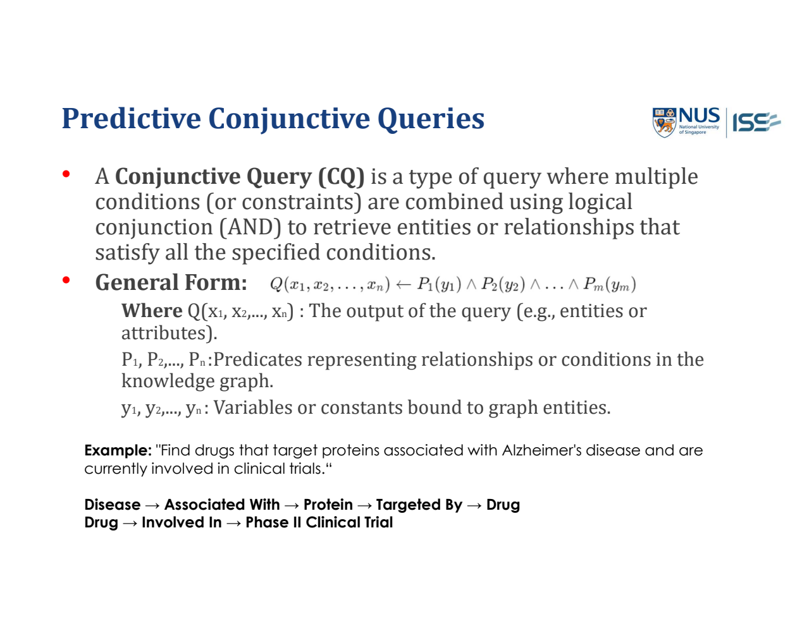

Knowledge Graph Traversal and Query Types
A knowledge graph stores connected facts. To answer a question, identify the starting entity, relationship(s) and unknown answer. The main distinction is one link, a chain of links, or several conditions on the same answer.
Traversal（走訪）: what you actually do
Start at a known entity, follow relevant relationships, and collect the information that answers the question. You are navigating existing graph facts—not automatically learning new links.
| Graph part | Meaning | In the lecture query |
|---|---|---|
| Node（節點） | An entity/concept. | Disease, protein, drug or player. |
| Edge（邊） | A relationship connecting nodes. | Associated With, Targeted By, roster. |
| Path（路徑） | A sequence of connected nodes and edges. | Disease → Protein → Drug. |
| Traversal | The operation of following/selecting those links. | From the disease, retrieve linked proteins, then their targeting drugs. |
At each step ask: Which node am I at? Which relationship do I need? Which connected nodes match it? Have all question conditions been met?
The seven traversal/query types on the lecture slide
| Type | How it works | When the question needs it |
|---|---|---|
| One-hop（單跳） | Read the matching immediate neighbours through one relation. | “What drugs target Protein A?” Return the connected drugs. |
| Multi-hop（多跳） | Use one step’s result as the starting point for the next relation. | “Drugs targeting proteins associated with Alzheimer’s.” Disease → Protein → Drug. |
| Conjunctive query（合取查詢） | Join/intersect conditions on the SAME answer candidate. | That drug must match the disease/protein path AND the Phase II trial condition. |
| DFS (Depth-First Search；深度優先搜尋) | Go down one branch as far as needed/possible; backtrack to try alternatives. | Explore/enumerate possible paths. It does not guarantee the cheapest or fewest-hop first result. |
| BFS (Breadth-First Search；廣度優先搜尋) | Explore all depth-1 neighbours, then depth 2, and so on. | All nodes within two hops; fewest-hop path when edges are equally weighted. |
| Weighted traversal（加權走訪） | Use the meaning of edge weights to prioritize or compare paths. | Minimum total cost/distance: sum weights along the path. With nonnegative costs, Dijkstra/UCS is a suitable method. |
| Random walk（隨機遊走） | Choose a next neighbour randomly, then repeat for a selected number of steps. | Sample neighbourhood/path patterns, e.g. to build embeddings. One walk is not an exhaustive query or guaranteed shortest route. |
- Important distinction: one-/multi-hop describe how many relationships the answer needs; conjunction describes the conditions.
- DFS/BFS/weighted traversal/random walk describe how exploration proceeds.
- They are not seven mutually exclusive models: you can use BFS to retrieve a multi-hop neighbourhood, or apply an AND filter to candidates found by traversal.
Original lecturer definitions and seven-type table


See the difference on one small graph
Teaching example: arrows below are available moves; numbers are nonnegative costs. Visit B before C when there is a tie.
A ─1→ B ─1→ D ─8→ G └──2→ C ─1→ E ─1→ G
| Method / question | Trace / result | What to notice |
|---|---|---|
| DFS: stop at the first G | A → B → D → G; cost 1+1+8=10. | It followed the first branch deeply; finding G first does not prove cheapest. |
| BFS: visit all reachable nodes | A, B, C, D, E, G. | Visit by hop depth: 0, then 1, then 2, then 3. Shared G is visited once. |
| BFS: all nodes within two hops of A | B, C, D, E (excluding the starting node A). | G is three hops away, so it is outside the requested depth. |
| Weighted shortest path to G | A → C → E → G; cost 2+1+1=4. | Both A–G routes have three hops, but their costs differ. Fewest hops is not the same as cheapest. |
| One possible random walk | A → C → E → G. | This is one sampled outcome, not proof the algorithm deliberately chose the cheapest path. |
- When graphs contain cycles: keep appropriate visited/path checks or a depth limit so exploration does not repeat forever.
- To enumerate all simple paths, keep per-path cycle checks; a global visited rule can otherwise suppress alternative valid paths.
DFS mechanics → · BFS mechanics → · Dijkstra/UCS mechanics →
Lecture application: roster AND two appearances
The lecture asks which players in the Memphis Grizzlies roster have both FIBA and Olympics appearance.
- Start at Memphis Grizzlies and follow roster links to its players.
- For each player, check the FIBA-appearance relationship.
- Check the Olympics-appearance relationship for that SAME player.
- Return the players satisfying both checks. The lecture’s displayed graph identifies Yuki.
This result is from the lecture example, not a claim about current real-world player records.

S-MR v064 Day 3 Xavier_26_Aug.pdf · PDF pp.27–33; result slide p.33.
Why traversal can miss answers or become expensive
- Missing links: no matching path means the answer is not established by this graph. The relationship may still exist in reality.
- Many branches / long paths: the number of candidates grows rapidly; use relation filters, depth limits and shared query conditions to restrict the search.
- No automatic prediction: following existing links does not by itself predict absent links or generalize to an unseen entity. That motivates the later embedding/model topics.
Definitions/types: S-MR v064 Day 3 Xavier_26_Aug.pdf · PDF pp.24–25. Incomplete graphs p.26; traversal application pp.27–33; limitations p.36. The small cost graph is a labelled teaching example, not a lecturer-supplied dataset.

S-MR v064 Day 3 Xavier_26_Aug.pdf · PDF p.19.
Recognize what the question asks
| Type | Meaning | Lecture question | Answer structure |
|---|---|---|---|
| One-hop（單跳） | Follow one relationship from the given entity to the answer. | Who is the head coach of the Memphis Grizzlies? | Team ─head-coach relation→ ? person |
| Path / multi-hop（路徑／多跳） | The first relation leads to an intermediate entity; another relation leads to the answer. | Which person owns the team where Ja Morant is a star player? | Ja Morant → team → owner |
| Conjunctive（合取；條件同時成立） | The SAME answer must meet all stated conditions. | Who played as a PG for Memphis Hustle AND is a friend of Ja Morant? | Players meeting condition 1 ∩ players meeting condition 2 |
Hop means following one relationship. Conjunctive means AND, not “choose either condition”. A conjunctive query can also contain multi-hop branches; these ideas can occur together.
Multi-hop: connect the steps through the SAME intermediate entity
- Start: Ja Morant is given; the owner is unknown.
- First relationship: find the team for which he is a star player.
- Intermediate result: keep that team, not an unrelated team.
- Second relationship: find the person who owns that team.
- Return: the owner person, not the intermediate team.
Given: Ja Morant Find team T such that: StarPlayerOf(Ja Morant, T) Find person P such that: Owns(P, T) Return P
- T and P are placeholders for the intermediate team and answer person.
- These predicate names explain the relation roles; use the actual labels/direction in the supplied graph.
- If ownership is stored as Owner → owns → Team, find the owner connected TO that team; do not silently swap the meaning of owns.
The slide gives the query structure, not a complete answer database. Do not invent an owner’s name.
Conjunctive: intersect the candidate answers
S₁ = players who played PG for Memphis Hustle S₂ = people who are friends of Ja Morant Answer = S₁ ∩ S₂
S₁ and S₂ are candidate sets. ∩ means the intersection: keep only candidates in both sets.
| Illustrative candidate | Played PG for Memphis Hustle? | Friend of Ja Morant? | Keep? |
|---|---|---|---|
| A | Yes | Yes | Yes |
| B | Yes | No known matching relation | Not established as an answer |
| C | No known matching relation | Yes | Not established as an answer |
These anonymous candidates illustrate the query operation; they are not asserted real basketball facts. A missing graph fact is not proof the relationship is false in the real world.
Common error: returning B or C because each satisfies one branch answers OR (union), not AND (intersection). Both branches must point to the same candidate.
Turn the wording into a graph query
- Underline given entities and the requested answer type: person, team, drug, etc.
- Circle relation words: coach of, owns, plays for, friend of.
- Draw the pattern: single arrow, chained arrows or branches meeting at one answer.
- Follow the actual relation directions and keep shared intermediate variables consistent.
- Return only the entity/entities satisfying the complete pattern.
- Recognition clues: “who is the X of Y?” may be one hop; “the X of the Y that…” often requires a path; “and also / both” signals multiple conditions.
- Confirm from the graph rather than deciding from words alone.
How the Disease → Protein → Drug → Trial query works
Question: find drugs that target a protein associated with Alzheimer’s disease AND are involved in Phase II clinical trials. The answer must be a drug, not a protein or a trial.

S-MR v064 Day 3 Xavier_26_Aug.pdf · PDF p.22.
1. Find candidate drugs through the disease/protein path
Alzheimer’s disease
─Associated With→ Protein P
─Targeted By→ Drug D- Start at the specified Disease node.
- Follow Associated With to find its linked protein(s).
- For each protein, follow Targeted By to find drug(s) that target it.
- Collect those drugs as the first candidate set.
- Targeted By: Protein P is targeted by Drug D.
- The same fact can be stored in the opposite verbal form, Drug D ─targets→ Protein P.
- If the graph uses “targets”, look up drugs pointing to P; do not read Protein P as targeting the drug.
2. Keep only candidates with the Phase II trial link
The SAME Drug D
─Involved In→ Phase II Clinical TrialCheck this condition for each candidate drug. A different drug’s trial link does not satisfy it. If the question says “currently”, use any supplied current trial/status information rather than an outdated link.
3. Apply AND to the same drug
| Teaching candidate | Targets a disease-associated protein? | In a Phase II trial? | Return? |
|---|---|---|---|
| Drug A | Yes, through Protein P | Yes | Yes — both conditions hold for A. |
| Drug B | Yes, through Protein Q | No matching trial fact | Not established as an answer. |
| Drug C | No matching disease/protein path | Yes | Not established as an answer. |
These anonymous records explain the operation; they are not medical facts or extra data supplied by the slide.
S₁ = drugs reached by Disease → Protein → Drug S₂ = drugs linked to a Phase II trial Answer = S₁ ∩ S₂ (same drug in BOTH sets)
- Why both query types?
- Disease → Protein → Drug is a two-hop path.
- Requiring the drug also to have the trial relationship adds a conjunctive (AND) condition.
- They describe different parts of the same query.
- What to write in an exam: “Traverse from the disease to associated proteins, then retrieve drugs targeting those proteins.
- Keep only drugs that also have an Involved In link to a Phase II clinical trial.
- Join the conditions on the same drug and return those drugs.”
Do not conclude: the drug cures the disease, has regulatory approval, or is suitable treatment. This query retrieves matching graph relationships; trial participation alone does not establish those claims.
Path example: PDF p.21. Combined query: PDF p.22. Step explanations and anonymous candidate records clarify the supplied lecture pattern.
Sources: S-MR v064 Day 3 Xavier_26_Aug.pdf · PDF pp.19–28. The three core patterns and basketball questions come from p.19; the anonymous candidate table and step-by-step explanation unpack those patterns.